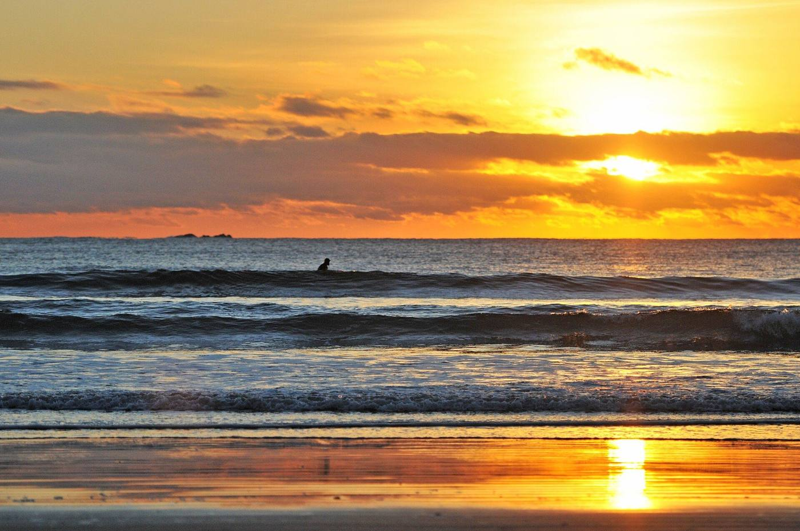
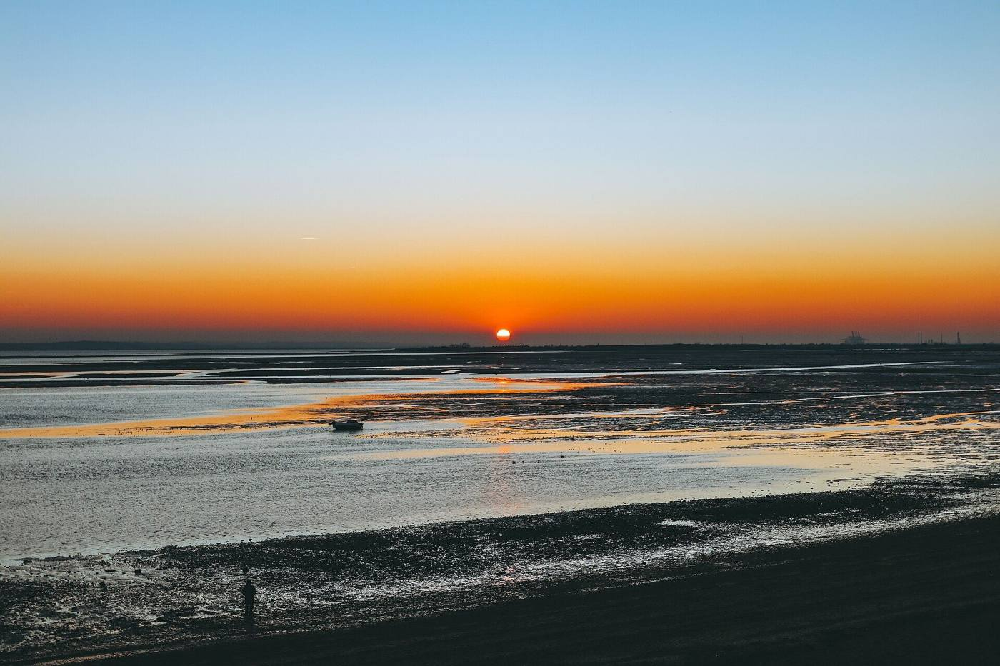
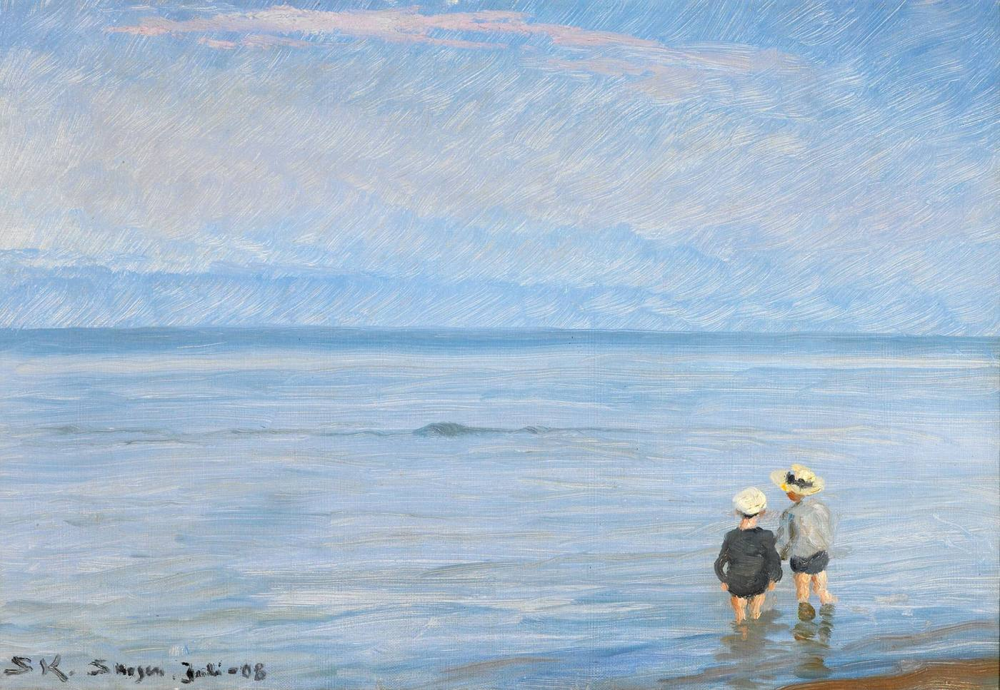
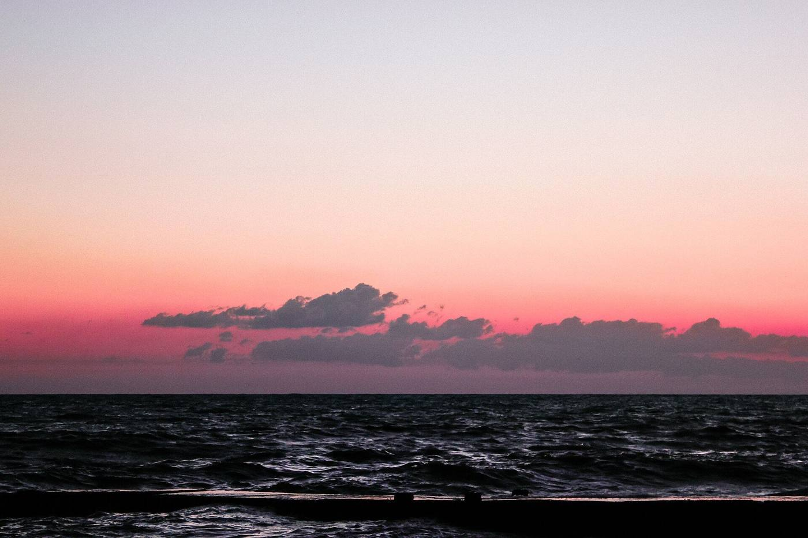

LalithSai

11.8× smalleraction head, my M.S. thesisThesis · 2026
3rd of 103CV4Ecology 2026 ChallengeTeam lead · FishONet
I teach robots to act from what they see and what they’re told.
Work 03
-

01 FishONet 3rd of 103. 17,393 species, 11,598 with no photos. 53.761% overall, 23.77% on unseen ones. -

02 Wavelet action head Replaces SmolVLA’s 99.88M flow expert with 8.43M parameters. Mixed result: 2 of 5 benchmarks passed non-inferiority. -

03 Two fixes that failed Retry reached +3.3 against a bar of +5. Feedback ended at −11.7. Both gates held.
More on GitHub 15
Play
Six small games, two of them from my research.
▶ Play the gamesAbout
Vision-language-action models turn camera images and text into robot motion. That is the work.
- Study
- M.S., AI Convergence Engineering, Changwon National University, expected 2027. B.Tech, SRM IST, 2024.
- Papers
- First author: KMMS 2026 (accepted), J. Broadcast Engineering (submitted).
- Award
- Led team CWNU AIX to 3rd of 103 at the CV4Ecology 2026 Challenge.